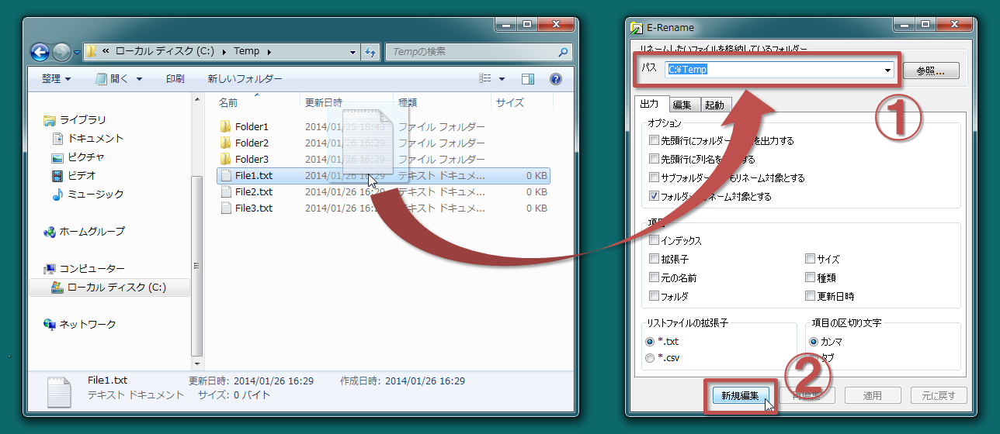
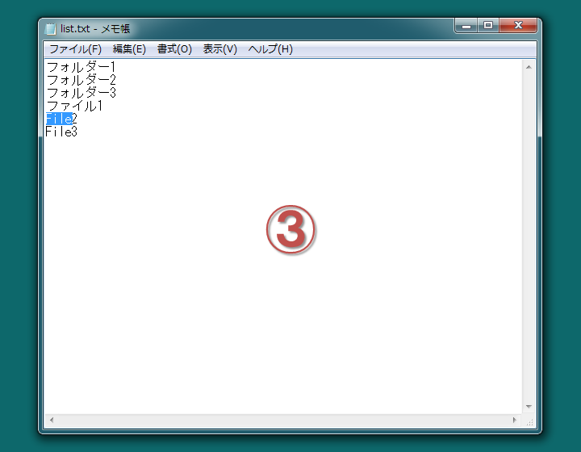
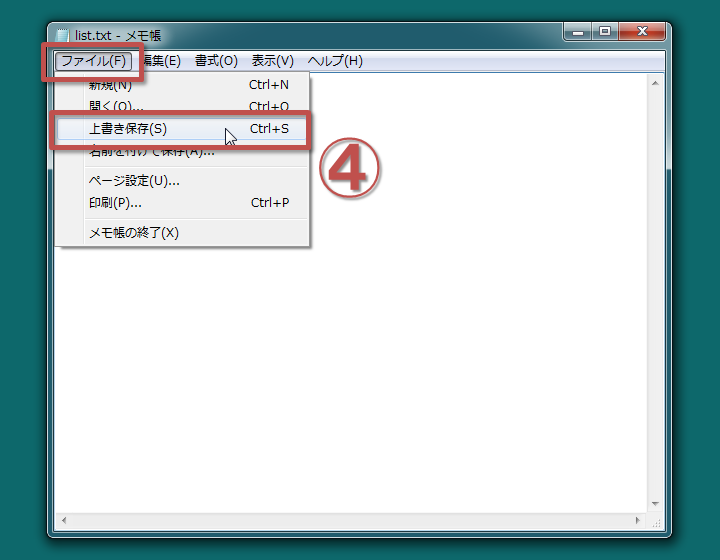
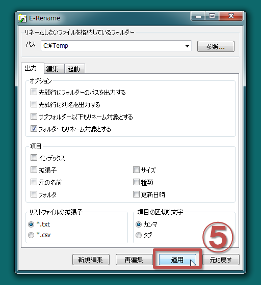
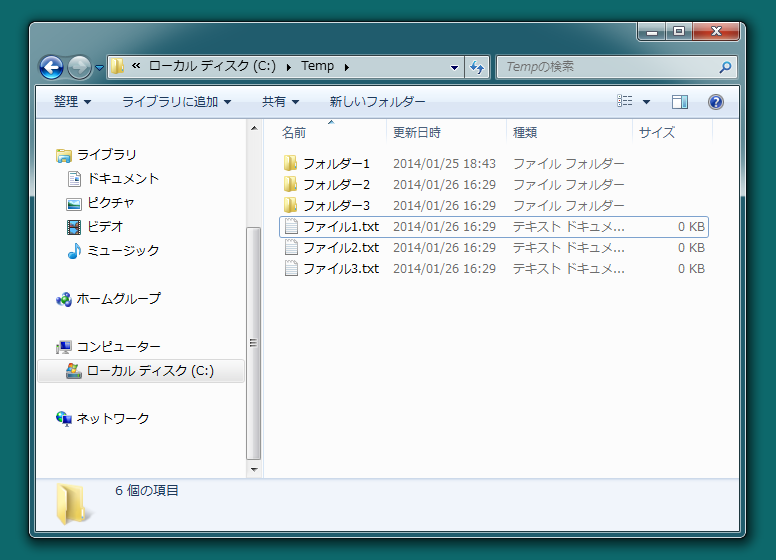

〜メモ帳でスラスラ一括ファイル名変更！〜
Windows XP, Windows 7, Windows 8
（以下は全て同じフォルダーにいれてください）
img フォルダー
・・・readme.html用画像ファイルlocale フォルダー
・・・言語ファイルMicrosoft.VC90.CRT フォルダー
・・・Microsoft Visual C++2008再頒布可能パッケージerename.exe
・・・アプリケーション本体erename.xrc
・・・xrcファイルreadme.html
・・・本ファイル
インストールは適当なフォルダーへアーカイブファイルに含まれる全てのファイルを入れてください。
アーカイブの内容については「構成ファイル」の項を参照してください。アンインストールは、そのフォルダーとその中の全てのファイルを削除してください。レジストリは一切いじっていません。
※インストーラー版ではインストールはインストーラーの実行で、アンインストールはコントロールパネルのプログラムのアンインストールから行ってください。
※インストール先のフォルダのアクセス権によっては %APPDATA%\E-Rename 以下に設定ファイル等が保存されます。気になる場合はアンインストール時にあわせて削除してください。
ファイル・フォルダーのリネームツールは数多く存在しますが
「機能が足りない」「操作が複雑」「操作が直感的でない」といったことはないでしょうか？
E-Renameではリネームしたいファイル・フォルダーのリストを
お好みのテキストエディターで編集すればその通りにリネームされます。
テキストエディターですから文字列置換等も自由自在です。
もうリネームツールの機能不足や使い勝手の悪さに悩むということはなくなります。
基本的な使い方1. リネームしたいファイル(またはフォルダー)が格納されたフォルダーを指定します。各ボタンについて
(エクスプローラからファイルやフォルダーをE-Renameのウィンドウにドラッグアンドドロップすると楽に指定できます。)(下図中(1))
2. 「新規編集」ボタンを押すとファイル・フォルダーのリストが作成されメモ帳等のテキストエディターで開かれます。(下図中(2))

3. テキストエディターにてリスト内のファイル・フォルダーの名前を好きなように編集し、上書き保存します。(下図中(3)(4))
 
4. E-Renameのウィンドウに戻り「適用」ボタンを押すと編集したリストの内容にしたがってファイル名変更がなされます。(下図中(5))
  新規編集リネームしたいファイルを格納しているフォルダーについて指定したフォルダーのリストを作成(既にあれば再作成)し、そのリストをテキストエディタで開きます。再編集
オプションを変えた場合や指定のフォルダーのファイル・フォルダー構成が変わった場合にそれをリストに反映させるのに使います。
新規編集で作成したリストをテキストエディタで開きます。適用
※リスト作成後、オプションやリネーム対象のフォルダーのファイル・フォルダー構成を変えた場合は
そのことをリストに反映するため「新規編集」の方を使ってください。
そうしないと正しくリネームできない可能性があります。
よって、基本的には「新規編集」の方を使ってください。
指定したフォルダーのリストの内容にしたがってリネームを実行します。元に戻す
ファイル・フォルダーの名前を適用前の状態に戻します。
複数回適用を行っている場合は、複数回、最後に新規編集を行った状態まで、元に戻すことができます。
リネームしたいファイルを格納しているフォルダーの指定には以下のような方法があります。オプションについて
- エディットボックスにパスを入力する（フルパスで指定する）
- 参照ボタンを押しフォルダー選択ダイアログから選択する
- ウィンドウへエクスプローラ等からファイル・フォルダーをドラッグアンドドロップする
- erename.exeのアイコンやそのショートカットのアイコンにエクスプローラ等からファイル・フォルダーをドラッグアンドドロップする
- erename.exeのショートカットをSendToフォルダーに置き、エクスプローラ等のショートカットメニューの「送る」から指定する
先頭行にフォルダーのパスを出力するリストについてチェックを入れると、リストの１行目に指定したフォルダーのパスが出力されます。先頭行に列名を出力する
チェックを入れると、リストの１行目（２行目）に列の（項目の）名前が出力されます。サブフォルダー以下もリネーム対象とする
チェックを入れると、指定したフォルダーのサブフォルダー以下にあるファイルもリネームの対象となり、ファイル名がリストに出力されます。フォルダーもリネーム対象とする
チェックを入れると、フォルダーもリネーム対象とします。Shift_JISの文字コードで出力する
チェックを入れると、リストをShift_JISの文字コードで出力します。(通常はUTF-8)リストに出力する項目
インデックスリストファイルの拡張子: .txt / .csvチェックを入れると、リストにインデックスの項目が出力されます。拡張子
インデックスを出力した場合、編集の際、インデックスとファイル名の組を崩さなければ行を入れ替えてもかまいません。
チェックを入れると、リストのファイル名・元のファイル名が拡張子を含んで出力されます。元の名前
チェックを入れると、リストに元のファイル（フォルダー）名の項目が出力されます。フォルダ
チェックを入れると、リストに元のファイル（フォルダー）のパスの項目が出力されます。サイズ
テキストエディタのマクロ機能などでファイルを開くのに使えます。
チェックを入れると、リストにファイルのサイズの項目が出力されます。種類
チェックを入れると、リストにファイル（フォルダー）の種類の項目が出力されます。更新日時
（種類といっても、ファイルの場合はその拡張子が出力され、フォルダーの場合は「フォルダー」と出力されるだけです。）チェックを入れると、リストにファイルの更新日時の項目が出力されます。
ファイル・フォルダーのリストの拡張子を「.txt」にするか「.csv」にするかを選択できます。項目の区切り文字: カンマ / タブ
どちらを選んでもリストの内容は変わりません。単に拡張子が変わるだけです。
「拡張子を「.csv」で出力する」にチェックを入れる場合は、あわせて「項目をカンマで区切る」にチェックを入れることをおすすめします。
リストの項目をカンマで区切るかタブで区切るかを選択できます。既定のアプリケーションで開く / 指定のアプリケーションで開く
「新規編集」「再編集」ボタンを押してリストを編集する際、リストを既定のアプリケーションで開くか指定のアプリケーションで開くかを選択できます。フォルダー指定起動時に自動で新規編集する
既定のアプリケーションとはリストの拡張子（「.txt」または「.csv」）に関連付けられたアプリケーションのことです。
指定のアプリケーションの指定には以下のような方法があります。
- エディットボックスにパスを入力する（フルパスで指定する）
- 参照ボタンを押しファイル選択ダイアログから選択する
「erename.exeのアイコンやそのショートカットのアイコンにエクスプローラ等からファイル・フォルダーをドラッグアンドドロップする」といった
フォルダーを指定した起動での起動直後に自動で「新規編集」ボタンを押したのと同じ動作をします。
編集にあたって注意事項スペース・カンマ・タブ・改行のみで構成されている行は空行として無視されます。リストの途中に空行を入れても適用の際支障はありません。構成ファイル
ファイル名の先頭についたスペース、末尾についたスペース・ピリオドはエクスプローラ等でのリネーム時と同様に無視されます。
適用の際有効なのはインデックスと名前だけでそれ以外の項目（元の名前・サイズ・種類・更新日時）は無視されます。
フォルダーのパスや列名を出力した場合、基本的にそれら行は編集しないでください。
（実際はそれらの行を空行にさえしなければＯＫですが）
また、それらの行よりも前にファイル名を持ってこないでください。
インデックスがある場合インデックスとファイル名の組を崩さなければ行を入れ替えてもかまいません。
リストを作成してから「適用」するまでは指定のフォルダー内のファイル・フォルダーの削除、リネームを行わないでください。
（追加は差し支えありません。）
ファイル名には「\」「/」「:」「*」「?」「"」「<」「>」「|」といった文字は使えません。また、項目の区切りがカンマでありファイル名にカンマが含まれる場合、ファイル名は「"test,test.txt"」のようにダブルクォーテーションマークで囲まなくてはいけません。項目の区切りがタブである場合はこの限りではありません。
Microsoft Excel で編集を行う場合は、「Shift_JISの文字コードで出力する」にチェックを入れ、リストファイルの拡張子を「*.csv」、項目の区切り文字を「カンマ」としてください。
リストを作成すると「erename.exe」と同じフォルダーに「list.dat」「list.txt（list.csv）」の２つのファイルが作成されます。
「list.txt（list.csv）」ファイルは実際にテキストエディタで編集するファイルのリストです。直接このファイルをエクスプローラ等から開いて編集を行ってもかまいません。
「list.dat」ファイルには「list.txt（list.csv）」ファイルの書式情報や「元に戻す」に使う情報といったプログラムが使う情報が保存されています。このファイルは編集しないでください。
リネームが済み、もう元に戻す必要もなくなった場合は「list.dat」「list.txt（list.csv）」ファイルは削除してしまってもかまいません。
基本的に処理中にエラーが発生した場合は処理は中断されます。
ファイル名には「\」「/」「:」「*」「?」「"」「<」「>」「|」といった文字は使えません。 また、項目の区切りがカンマでありファイル名にカンマが含まれる場合、ファイル名は「"test,test.txt"」のようにダブルクォーテーションマークで囲まなくてはいけません。項目の区切りがタブである場合はこの限りではありません。
リスト適用の際にこの事に関するエラーがでてしまった場合はリスト内の該当するファイル名を適当なものに直してから再度リストの適用を試みてください。
「E-Rename」の著作権はくりまが保有しています。
転載、配布は自由に行なってください。
雑誌等への掲載につきましては事後でも構いませんのでメールでお知らせいただけると幸いです。
このプログラムを使用したことによって生じたいかなる損害も、作者は免責とさせていただきます。
プログラム上にある、いかなるバグ、欠陥も作者はそれを訂正する義務を負いません。
「E-Rename」に不具合を見つけた場合はホームページの掲示板に書き込むか下記宛にメールを送ってください。なるべく対処したいと思います。
また、こんな機能を追加してほしい、この機能は要らない、といった意見もどしどしお寄せください。
e-mail address : KurimaYoshida@hotmail.com
website : http://kurima.sakura.ne.jp/
2013/11/30 - Version 3.00β6
2013/12/01 - Version 3.00β7
- とりあえず公開
2013/12/03 - Version 3.00β8
- ファイル・フォルダ選択ダイアログの文字化け修正
2013/12/04 - Version 3.00β9
- ファイルをD&Dした時にはそのファイルが入っているフォルダのパスがコンボボックスに入力されるように変更
- ファイルを渡しての実行だとリストファイル等の出力先がerename.exeのフォルダでなくなるのを修正
2013/12/11 - Version 3.00
- Windows XP で日本語を含むパスを渡して起動すると、パスのコンボボックスの内容が文字化けすることがあったのを修正
- 起動時にパスのコンボボックスの内容がドロップダウンリストの内容で補完されてしまうのを修正
2013/12/14 - Version 3.01
- CSVファイルとしての書式不正があった場合に対応
- ピリオドで終わるファイル名を不正と扱うように変更
- 元に戻すが完了したらメッセージボックスを表示するように変更
2014/01/13 - Version 3.02
- Windows 7 における %ProgramFiles% 等、実行ファイルのある場所にファイルの書き込み権限が無い場合に対応(%APPDATA%にデータを出力するように)
2014/01/14 - Version 3.03
- list.logファイルをlist.datファイルに統合
- 拡張子を出力しない場合、同一フォルダ内でファイル名を移すようなリネームをすると、ファイル名の拡張子が消えるのを修正
- 「list.dat」「list.txt（list.csv）」ファイルが書き込み可能か事前確認を行うように
- 日本語以外の環境での英語表示に対応
2014/01/19 - Version 3.04
- Version 3.01のlist.datファイルが残っていても起動できるように
- 「list.dat」「list.txt（list.csv）」ファイルが無い場合「再編集」「適用」ボタンが無効になるように
2014/01/25 - Version 3.05
- 「指定のアプリケーションで開く」のパスが不正な時のエラーメッセージを修正
- 「指定のアプリケーションで開く」のパスに相対パスも指定できるように
2014/01/25 - Version 3.06
- Tabキーでのフォーカスの移動を修正
2014/01/26 - Version 3.07
- 「指定のアプリケーションで開く」のパスに日本語が入るとエラーになるのを修正
2014/01/27 - Version 3.08
- 「参照...」で開くフォルダーの参照ダイアログのデフォルトパスをマイドキュメントに
- readme.htmlに画像を追加
2014/01/30 - Version 3.09
- ディスプレイの設定によっては起動直後のウィンドウサイズがおかしかったのを修正
2014/02/01 - Version 3.10
- 多重起動できないように
- readme.htmlの誤った記述を修正。サブフォルダー以下もリネーム対象とした場合もフォルダーのリネームは可能。
2014/02/08 - Version 3.11
- 編集タブのラジオボタンにTabキーでフォーカスを移せなかったのを修正
- Shift+Tabキーでのフォーカスの移動を修正
2014/02/22 - Version 3.12
- コンボボックスに'%'の文字が入っていると終了時エラーとなっていたのを修正
- パスの指定に%WINDIR%等の環境変数を使えるように
- コンボボックスに入力できる文字数を制限
2014/03/02 - Version 3.13
- リストの編集の際にリストの文字コードを変更されても大丈夫なように
2014/03/03 - Version 3.14
- 項目の区切り文字を自動判別するように
- エディターに渡すリストファイルのパスを標準化するように(一部エディターが標準化していないパスを受け付けなかったため)
- 一部のメッセージが英語表示になっていたのを修正
2014/03/30 - Version 3.15
- リストファイルをShift_JISの文字コードで出力するオプション追加
2014/04/19 - Version 3.16
- 引数で渡されたパスの先頭や末尾に'"'があっても大丈夫なように
- リストファイル先頭のファイル名にカンマが含まれているとタブ区切りでもカンマ区切りとして扱われてしまうのを修正